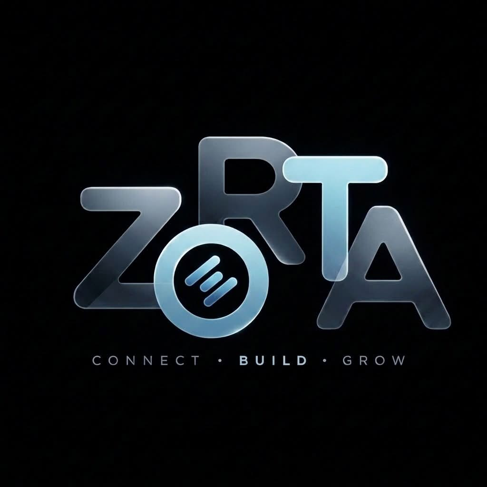

THE ARCADE
Quick games. Competitive nonsense. Tiny victories that you will absolutely mention later.

← Back homeZORTA / GAMES
You found the games page. There are currently approximately zero games here. Very impressive. We are working on that.
Join the Discord →Quick games. Competitive nonsense. Tiny victories that you will absolutely mention later.
Games are better when there are people on the other side. Find your crew, challenge someone, and make the leaderboard mean something.
New experiences are being planned. Until then, enjoy this extremely advanced feature called text.